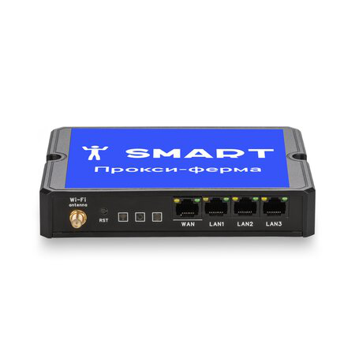
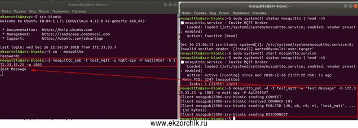

Как поднять MQTT Server on Ubuntu 18.04
Отekzorchik МАЙ 4, 2019 #mosquitto, #MQTT, #Ubuntu 18.04
Прочитано: 5 472
Рабочая, тестовая система: Ubuntu 18.04 Server amd64
The Publisher sends a message to the network.

smart-bussines-2024.online
РЕКЛАМА
Установите прокси-ферму у себя дома и получайте доход!
gitverse.ru
РЕКЛАМА•16+
Пишите код быстрее с AI-ассистентом GigaCode
The Subscriber listens for messages with a particular topic.
Работа MQTT (Message Queuing telemetry transport) строится на упрощенном сетевом протоколе работающем над TCP/IP, он ориентирован для обмена сообщениями/показаниями между устройствами на основе Publischer → Subscriber. У Mqtt есть три уровня работы именуемые, как QoS: 0,1,2. Я буду пока рассматривать самый дефолтный уровень, т. е. 0.
Шаг №1: Сперва посредством своего скрипта настраиваю систему установленную из образа: ubuntu-18.04.2-server-amd64.iso
hg clone --insecure https://ekzorchik@172.35.35.8/hg/dproject
sudo ./dproject/default
У Вас читатель — это собственные выработанные шаги настройки.
Шаг №2: Устанавливаю пакеты необходимые для разворачивания MQTT Server
ekzorchik@srv-bionic:~$ sudo apt-get install build-essential libwrap0-dev libssl-dev libc-ares-dev uuid-dev xsltproc -y
Шаг №3: Создаю учетную запись от имени которой будет работать MQTT:
ekzorchik@srv-bionic:~$ sudo useradd -p $(openssl passwd -1 Aa1234567) --shell /bin/bash --home /home/mosquitto -m mosquitto
ekzorchik@srv-bionic:~$ sudo usermod -aG sudo mosquitto
ekzorchik@srv-bionic:~$ su - mosquitto
To run a command as administrator (user "root"), use "sudo <command>".
See "man sudo_root" for details.
mosquitto@srv-bionic:~$
Шаг №4: Скачиваю самую последнюю версию пакета mosquitto с официального сайта на момент написания данной заметки под пользователей которого создал в Шаге №3:
mosquitto@srv-bionic:~$ wget https://mosquitto.org/files/source/mosquitto-1.5.5.tar.gz
mosquitto@srv-bionic:~$ tar zxf mosquitto-1.5.5.tar.gz
mosquitto@srv-bionic:~$ cd mosquitto-1.5.5/
mosquitto@srv-bionic:~/mosquitto-1.5.5$ make && sudo make install
mosquitto@srv-bionic:~/mosquitto-1.5.5$ cd ~
Ранее я использовал версию 1.5, но вот сейчас смотрю уже есть новее (на 30.04.2019), значит буду использовать новую
mosquitto@srv-bionic:~$ wget https://mosquitto.org/files/source/mosquitto-1.6.2.tar.gz
mosquitto@srv-bionic:~$ tar zxf mosquitto-1.6.2.tar.gz
mosquitto@srv-bionic:~$ cd mosquitto-1.6.2/
mosquitto@srv-bionic:~/mosquitto-1.6.2$ make && sudo make install
mosquitto@srv-bionic:~/mosquitto-1.6.2$ cd ~
mosquitto@srv-bionic:~$ sudo mosquitto_passwd -c /etc/mosquitto/pwfile mqtt-spy
где mqtt-spy — это пользователь сервиса mosquitto, а в файле pwfile его пароль.
mosquitto@srv-bionic:~$ sudo mkdir /var/lib/mosquitto/
mosquitto@srv-bionic:~$ sudo chown -R mosquitto:mosquitto /var/lib/mosquitto/
mosquitto@srv-bionic:~$ sudo nano /etc/mosquitto/mosquitto.conf
persistence true
persistence_location /var/lib/mosquitto/
persistence_file mosquitto.db
log_dest syslog
log_dest stdout
log_dest topic
log_type error
log_type warning
log_type notice
log_type information
connection_messages true
log_timestamp true
allow_anonymous false
password_file /etc/mosquitto/pwfile
mosquitto@srv-bionic:~$ sudo ldconfig
mosquitto@srv-bionic:~$ sudo nano /etc/systemd/system/mosquitto.service
[Unit]
Description=Insite MQTT Broker
[Service]
ExecStart=/usr/local/sbin/mosquitto -c /etc/mosquitto/mosquitto.conf
Restart=always
[Install]
WantedBy=multi-user.target
[Install]
WantedBy=multi-user.target
mosquitto@srv-bionic:~$ sudo systemctl enable mosquitto.service
Created symlink /etc/systemd/system/multi-user.target.wants/mosquitto.service → /etc/systemd/system/mosquitto.service.
mosquitto@srv-bionic:~$ sudo systemctl start mosquitto.service
mosquitto@srv-bionic:~$ sudo systemctl status mosquitto | head -n5
● mosquitto.service - Insite MQTT Broker
Loaded: loaded (/etc/systemd/system/mosquitto.service; enabled; vendor preset: enabled)
Active: active (running) since Tue 2019-04-30 22:41:09 MSK; 5s ago
Main PID: 3523 (mosquitto)
Tasks: 1 (limit: 2338)
Шаг №5: Проверю работу, в одной вкладке консоли набираю:
(где:
mosquitto@srv-bionic:~$ mosquitto_sub -t test_mqtt -u mqtt-spy -P Aa1234567 -h 172.33.33.25 -p 1883
mosquitto@srv-bionic:~$ mosquitto_pub -d -t test_mqtt -m "Test Message" -h 172.33.33.25 -p 1883 -u mqtt-spy -P Aa1234567
Client mosqpub|15807-srv-bioni sending CONNECT
Client mosqpub|15807-srv-bioni received CONNACK (0)
Client mosqpub|15807-srv-bioni sending PUBLISH (d0, q0, r0, m1, 'test_mqtt', ... (12 bytes))
Client mosqpub|15807-srv-bioni sending DISCONNECT

Работает, вот только пока не понятно как я могу это использовать в дальнейшем. Со временем стало понятно, я могу данные с датчиков пересылать в указанные топики. На это я для себя разобрал данную заметку. С уважением, Олло Александр aka ekzorchik.
pangolin.sbertech.ru
РЕКЛАМА•16+
Pangolin - российская СУБД уровня Enterprise
Поддержка 24/7 • Бесшовная миграция • 80 000+ инсталляций • Входит в ЕРРПО
Навигация по записям
Обновление использования rTorrent на Ubuntu Bionic
Если подняли OwnCloud у себя дома
От ekzorchik
Всем хорошего дня, меня зовут Александр. Я под ником - ekzorchik, являюсь автором всех написанных, разобранных заметок. Большинство вещей с которыми мне приходиться разбираться, как на работе, так и дома выложены на моем блоге в виде пошаговых инструкции. По сути блог - это шпаргалка онлайн. Каждая новая работа где мне случалось работать вносила новые знания и нюансы работы и соответственно я расписываю как сделать/решить ту или иную задачу. Это очень помогает. Когда сам разбираешь задачу, стараешься ее приподнести в виде структурированной заметки чтобы было все наглядно и просто, то процесс усвоения идет в гору. Также прошу на https://win.ekzorchik.ru https://lin.ekzorchik.ru https://net.ekzorchik.ru https://voip.ekzorchik.ru https;//home.ekzorchik.ru